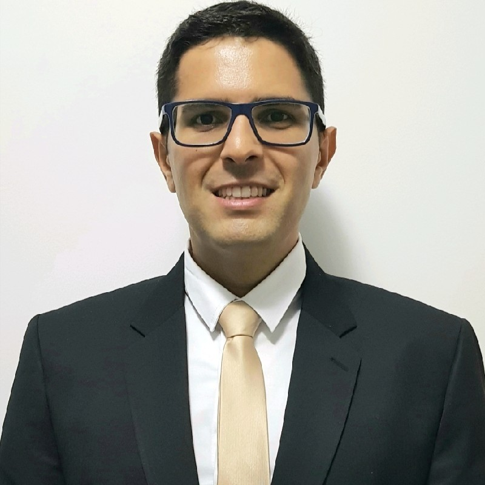
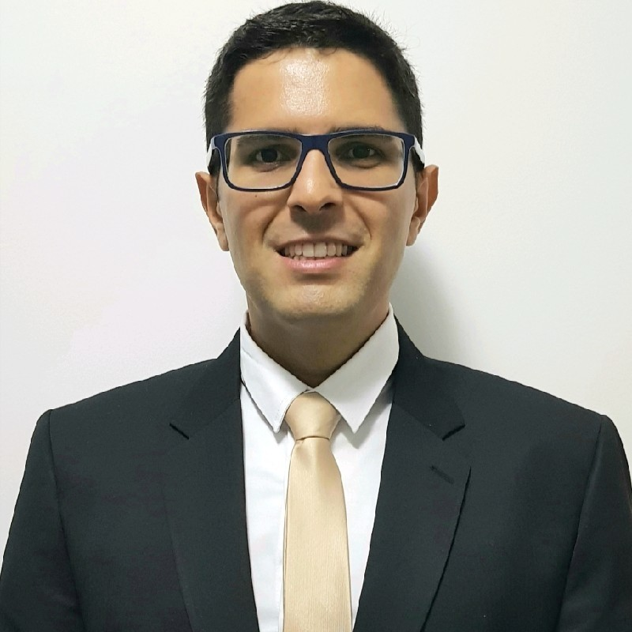
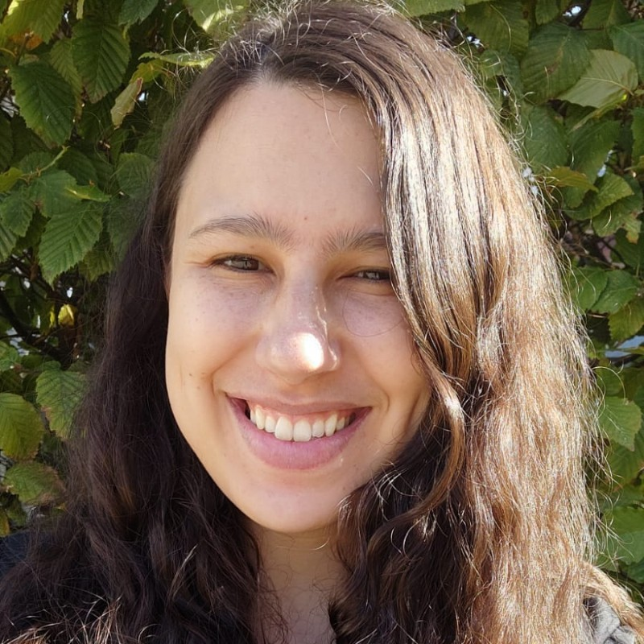
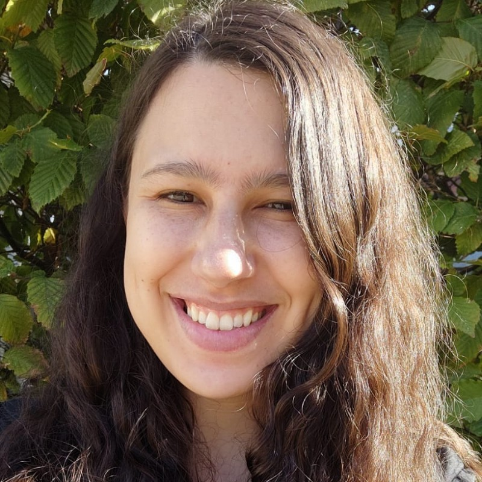
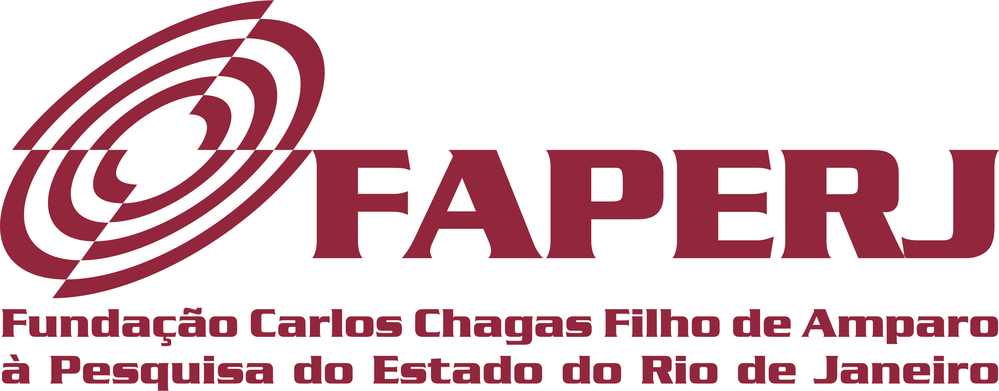

Research Projects
This page highlights the main research projects coordinated by Daniel de Oliveira.
Execução e Análise de Workflows de Aprendizado de Máquina Federado para Astronomia em Ambientes de Computação de Alto Desempenho 🇧🇷
Execution and Analysis of Federated Machine Learning Workflows for Astronomy in High-Performance Computing Environments 🇺🇸
Description: In recent decades, Machine Learning has received growing attention from both academia and industry. However, traditional Machine Learning approaches face critical challenges, especially regarding data privacy and the volume and transfer of information to be processed. To address these issues, Federated Learning has emerged as a promising solution. This approach allows different nodes in a network to train models collaboratively without the need for direct sharing of examples, thereby preserving privacy and minimizing the amount of data transmitted between parties. However, the training process in Federated Learning brings specific challenges, such as the heterogeneity of participating nodes, which vary in terms of computational capacity and data characteristics. The effective distribution of training tasks among these nodes is crucial to ensure the process is both efficient and fair. Another critical point involves the monitoring and analysis of workflows in Federated Learning. Although tasks generate and consume large amounts of data, the lack of clear provenance documentation makes it difficult to analyze the results obtained. Provenance data capture provides an effective solution, increasing reliability, reproducibility, and offering mechanisms for interpreting the resulting models. Nevertheless, in the specific context of Federated Learning, the use of provenance data is still at an early stage, with current solutions showing limitations in capturing relevant metadata and in leveraging it for training monitoring and optimization. This project aims to address these gaps by proposing the development of algorithms and techniques that enable the extraction, modeling, and management of provenance data in the Federated Learning environment. The goal is not only to improve the allocation and scheduling of training tasks, but also to provide robust analytical support to users by integrating provenance data into existing frameworks. As a case study, we will use an application for identifying outlier objects in large astronomical catalogs. This application is part of the Legacy Survey of Space and Time (LSST) project, which generates 20 TB of raw data per night and has a naturally distributed processing infrastructure. The project thus seeks to contribute to making Federated Learning more efficient and explainable, with a special focus on Astronomy applications, where scalability and proper data handling are essential for scientific advances..


 



FedProv - Gerência de Dados de Proveniência em Aplicações de Aprendizado de Máquina Federado 🇧🇷
FedProv - Provenance Data Management in Federated Machine Learning Applications 🇺🇸
Description: Federated Machine Learning (or simply Federated Learning) is a distributed technique that enables collaboration among multiple users in training Machine Learning models (e.g., Deep Neural Networks). Federated Learning has been applied in various domains such as Medicine, Biology, and Pharmacy, as it eliminates the need to access the entire dataset for model training, since part of the data may be private or sensitive. In a Federated Learning application, each client node (e.g., a mobile phone, computer, or cluster) trains a model locally and then sends the model updates to a server node, where they are aggregated into a global model. This global model is redistributed for a new training round across client nodes. Training such models can require several iterations, making the process time-consuming, since each iteration depends on configuration choices such as the global aggregation method, hyperparameters, and the datasets used. Analyzing aggregation methods, hyperparameters, and metrics (e.g., accuracy) during distributed training allows for better understanding of the trained model and opens opportunities for improvements such as automated hyperparameter tuning and fault tolerance. Provenance data emerges as an interesting alternative to represent the derivation path of data during training, enabling analysis, monitoring, and necessary interventions. The FedProv project aims to develop algorithms and techniques for capturing, modeling, storing, and managing provenance data of artifacts involved in the lifecycle of a Federated Learning application. These artifacts include datasets, data transformations, and users associated with preprocessing, training, testing, and validation steps, in addition to the trained models themselves. Furthermore, FedProv intends to support additional actions through the captured provenance data, such as configuration adaptations, parameter tuning, and fault tolerance (since a distributed application is more susceptible to failures). By integrating provenance metadata and data into a database, we expect queries to this database to assist users during distributed training.
 



